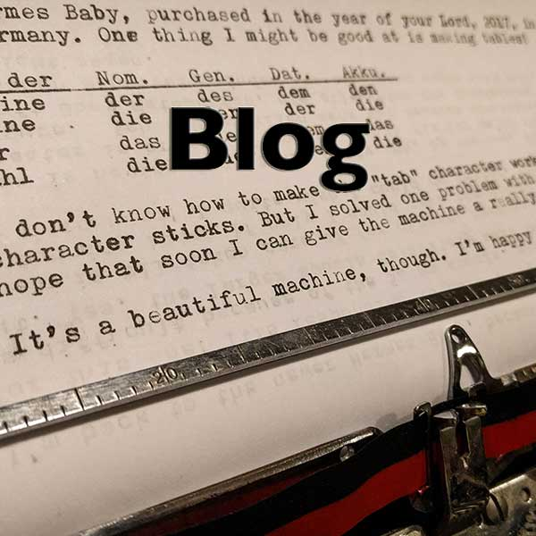
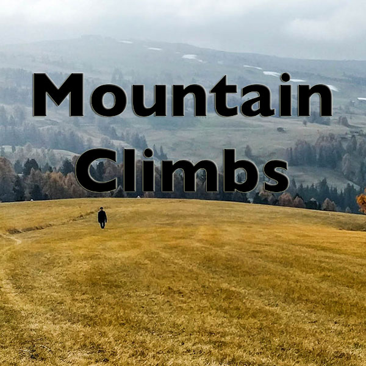

<main>
  <section>
      <h1>{{ site.title }}</h1>
      <h3>{{ site.description }}</h3>
  </section>

  <p>Hi there! Here is my <a href="blog/">blog</a> and log of <a href="cma/">trip reports</a> in the mountains.</p>

  <table>
    <tr>
      <td><a href="blog/"></a></td>
      <td><a href="cma/"></a></td>
    </tr>
  </table>

  <ul>
    <li>Recently, I made a
      <a href="https://www.flickr.com/photos/ripsawridge/albums/72157678423034254">gallery of posters</a>
      about my typewriters.</li>
    <li>April 2017 - My friends Uli and Christiane published an
      <a href="http://www.dustyboots.blog/bergphilosoph-michael/">interview with me</a>
      about mountains and life, in German no less!</li>
    <li>I have a <a href="https://ripsawridge.github.io">technical blog</a> about V8/JavaScript/Virtual Machines if you like
      that sort of thing.</li>
  </ul>
  <hr>

  <a href="https://app.wercker.com/project/bykey/b858b893afc28b10d1dc5766544d5f44"></a>

</main>

{% include footer.html %}
